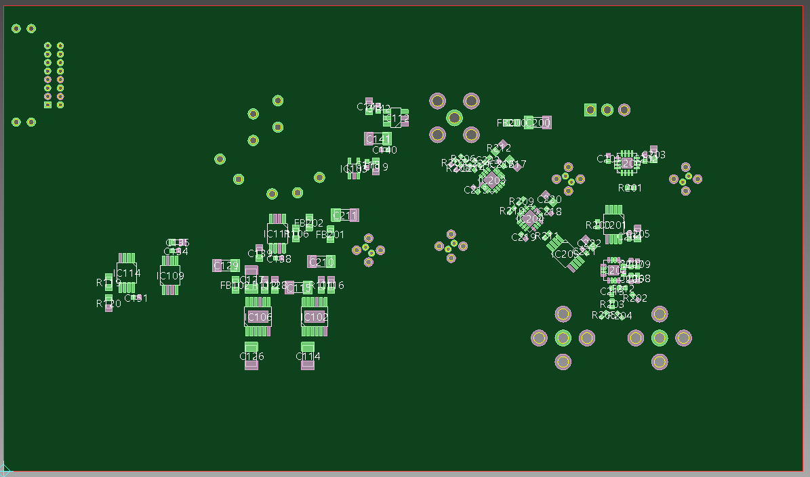
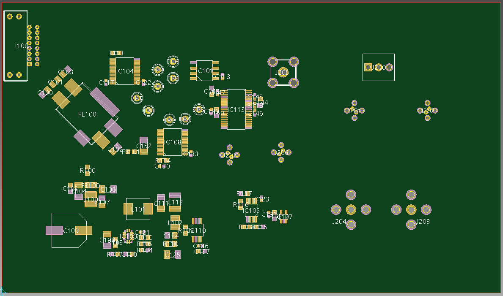
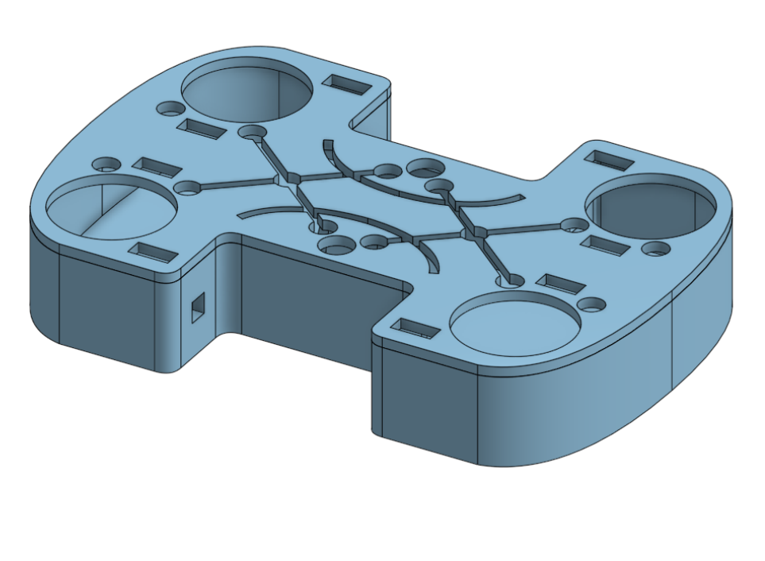
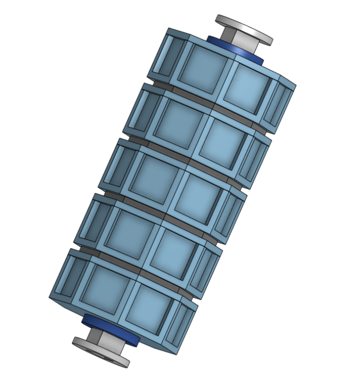

Formation

Son et Lumières pour un Rafale
Le premier projet de formation que j'ai réalisé consistait simplement à utiliser un NE555
💡 Composant ayant la fonction de timer, dont la période dépends des composants l'entourant.
afin de faire clignoter une led sur une maquette de rafale miniature.
Ce premier projet m'a permis de commencer à appliquer ce que nous voyons en cours,
ainsi que prendre en main le matériel de conception
et vérification d'une carte.

Thermomètre De Bain
Le deuxième projet que j'ai eu l'occasion de réaliser était un thermomètre,
ou plus précisément un capteur de température avec 3 LEDs de couleurs afin d'indiquer
la température de l'environnement.
Une LEDs bleue s'allumait si la température était en dessous de 36°C,
une rouge si la température était au dessus de 39°C, et une verte si la température se
situait entre les deux.

Kart A Hélices
Le troisième projet que j'ai pu réaliser consistait à faire communiquer deux
cartes par infrarouges, afin de contrôler à l'aide d'une carte émétrice un kart avec une
carte réceptrice.
Ce projet était par groupe de 8, avec 4 personnes sur chaque carte. Pourtant, j'ai
fait partie du seul groupe de 2 personnes, en charge de l'émetteur uniquement (proposition
du professeur que nous avons accepté). J'ai donc pu profiter de ce projet pour évaluer
mes capacités de travail en sous-effectif.
Avec un volant
modélisé en 3D et un programme optionnel sur la carte permettant de contrôler les karts des
autres équipes à distance, nous avons pu réaliser le projet et même plus avec 2 fois moins
de personnes que prévu.

Robot Mini-Sumo
Le robot mini-sumo à été un projet très varié pour moi. Le projet consistait à
créer un robot qui pourrait détecter des adversaires, le dojo sur lequel il se trouve,
ainsi qu'appliquer différentes stratégies afin de pousser son adversaire hors du dojo.
Durant ce projet, j'ai pu créer des tests afin de comprendre le fonctionnement des différents
capteurs que nous avions à disposition, le format de leur données, ainsi que de modéliser
en 3D une structure
pour supporter les capteurs qui permettraient de détecter l'adversaire.

Concours De Radiogoniométrie
Dans cadre de ma spécialité en Electricité et Systèmes Embarqués, j'ai aussi pu fabriquer
une antenne rudimentaire, avec une fréquence de résonnance à 144 MHz et un circuit d'adaptation
💡 En hautes fréquences, le trajet d'un signal entre un émetteur et un récepteur doit être adapté afin que le transfert d'informations soit le plus efficace et le moins perturbé possible.
composé de deux condensateurs en parallèle et une bobine en série.
Ce projet m'a permis d'en apprendre et comprendre davantage sur les circuits haute
fréquence, ainsi que sur le fonctionnement d'une antenne en général.
J'ai aussi pu implanter
le circuit d'adaptation cité plus haut, ainsi qu'utiliser un logiciel afin de récupérer les informations
captés par l'antenne.
Professionnel
Projet ALMA
Dans le cadre de mon stage de fin de deuxième année de BUT GEII, j'ai pu travailler avec l'équipe
SEII💡 Systèmes Electroniques et Informatique Instrumentale
du Laboratoire d'Astrophysique de Bordeaux.
Le projet sur lequel j'ai travaillé est un projet international nommé ALMA💡 Atacama Large Millimeter Array, soit 66 antennes placées dans le désert d'Atacama, au Chili. Ces antennes sont espacées de 15 m à 13 km de distance..
Plus précisément, j'ai travaillé sur une des cartes du module proposé par le LAB, soit la carte
DGCTR💡 DiGitizer Clock TRansmitter. Son rôle est de recevoir un signal TE (Time Event💡 Un signal qui à pour rôle de synchroniser les 66 antennes ensemble, puisque le temps de trajet des informations captées par chaque antenne varie en fonction de leur distance. Malheureusement, ce signal n'est pas à fréquence parfaitement contante, et doit donc être "nettoyé" afin de rendre cette fréquence la plus constante possible.)
et une fréquence de 125 MHz,
et d'utiliser celle-ci pour réduire la variation de fréquence (le "jitter") du signal TE sous un seuil acceptable, avant de transmettre ces signaux aux autres cartes du modules en ayant besoin.
Grâce à ce projet, j'ai découvert les normes IPC💡 Institute of Printed Circuits, ou un ensemble de règles définie afin d'assurer la fiabilité court et long terme d'un système électronique.,
l'empilage de couches💡 Une carte électronique peut avoir plusieurs couches de cuivre, permettant un routage de plus en plus complexe plus le nombre de couches augmente. Mais cela vient aussi avec son lot de contraintes, qu'il faut garder à l'esprit lors du routage de la carte. et ses enjeux,
ainsi que le blindage💡 En hautes fréquences, les composants sont très sensibles aux perturbations extérieures. On place donc des vias traversants connectés à la masse de chaque côté des pistes que l'on souhaite blinder, ce qui les protège davantage des perturbation externes.
et les paires différentielles💡 Afin de faire de la vérification d'information, certains composants ont en sortie un signal et son inverse, ce qui permet de s'assurer de la fiabilité de l'information reçue ensuite. Ces deux signaux doivent se déplacer côte à côte, afin d'arriver en même temps à leur destination, et sont donc nommés paires différentielles..





Personnels

Jeu de roulettes
Dans mon temps libre, je joue à quelques jeux vidéos. Parmis eux, un jeu que j'aime beaucoup, Sea Of Stars,
propose un mini-jeu nommé "jeu de roulette" (visible ci-contre). Il s'agit d'un jeu compétitif à deux joueurs (ou contre un non-joueur), avec une roulette permettant d'effectuer différentes actions. Pour plus de détails, je vous laisserais explorer le fonctionnement précis du jeu ici.
Etant un grand amateur de ce jeu, et appréciant beaucoup les projets qui permettent de lier différents domaines, j'ai décidé de recréer une table de roulette, faisant ainsi de la mécanique, de l'électronique et de l'informatique, tout en
relevant le défi d'adapter des logiques de jeu dans le monde réel.
A l'heure actuelle, la partie mécanique (boitier, roulettes, supports de figurines) est terminée d'être modélisée, et la partie électronique (écrans LCD, déroulement d'une partie, gestion des points de vie) est en réflexion.

